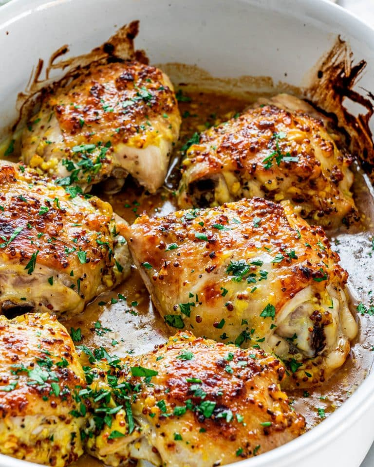

Baked Mustard Chicken Thighs

Description
This chicken dish is a game-changer for mid-week meals—simple yet packed with bold flavors! The honey's sweetness perfectly balances the tangy spice of mustard, creating a rich, savoury glaze that’s downright irresistible!
Ingredients
- Boneless chicken thighs 500g
- 1 tsp salt
- 1 tsp pepper
Sauce
- 2 tbsp Olive oil
- 2 tbsp Dijon Mustard
- 2 tbsp honey
- 6 cloves of garlic(minced)
- 1 tsp chilli flakes
Steps
- Preheat oven to 200C
- Place chicken thighs in a bowl and season them with salt and pepper
- Whisk the sauce ingredients together in a bowl
- Pour the sauce over the thighs and mix them well
- Transfer the chicken into a baking dish, including any sauce. THere is no need to oil the dish
- Put the baking dish in the oven and bake for 25 minutes.
- Take the chicken out of the oven and cover with an aluminium foil. Let it rest for 10 minutes.
- Serve and enjoy!
Home